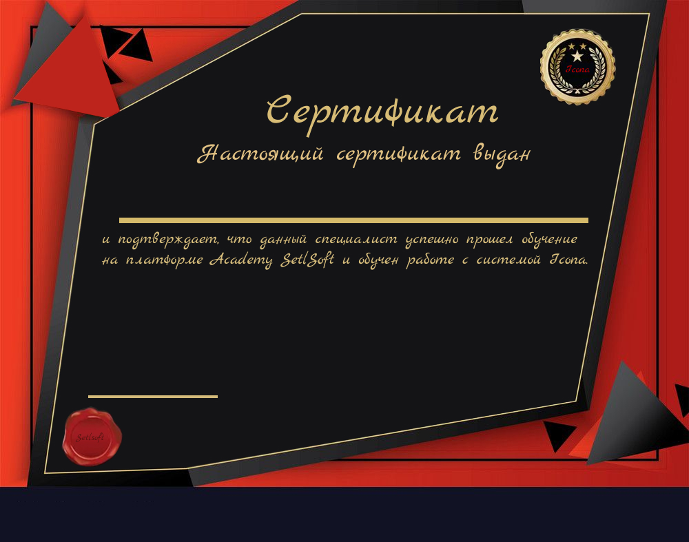

Технический надзор: контроль и качество
Технический надзор — главный гарант качества и безопасности в строительстве. Этот раздел подробно расскажет о задачах, инструментах, документации и ключевых ошибках надзора.
68% завершено модуля
Видеоурок: Контроль строительных работ и взаимодействие
Как правильно организовать входной, операционный и финальный контроль, минимизировать риски и правильно вести проектную и исполнительную документацию.
Ключевые задачи технадзора:
- Контроль соответствия работ утверждённой документации и нормативам (СНиП, ГОСТ).
- Входной
операционный контроль материалов и конструкций. - Освидетельствование скрытых работ и ответственных конструкций.
- Формирование и хранение актов, журналов работ, чек-листов.
- Профилактика, выявление и устранение дефектов и нарушений.
Интерактив: Оформите акт освидетельствования скрытых работ
Инструменты технического надзора
Заполните типовой акт для кирпичной кладки:
- Нивелиры, лазерные уровни, теодолиты
- Дефектоскопы (ультразвук и др.)
- Контрольные журналы и чек-листы
- Фотоотчёты и электронные базы
- Пропуск обязательных этапов освидетельствования.
- Недостаточно тщательный входной контроль материалов.
- Некорректное оформление документов — отсутствие подписей/штампов.
- Неведение фотоархива скрытых работ.
- Позднее уведомление о дефектах.
Важно: Эффективная работа технического надзора обеспечивает долгий срок службы, безопасность и экономию в эксплуатации объекта.
Тест завершён? Получите сертификат

Превью сертификата
Ваше имя появится на самом сертификате